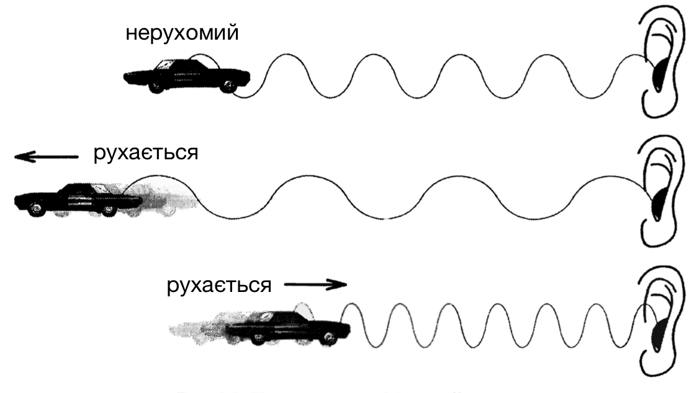

У зв’язку із значним розвитком комп’ютерної індустрії у світі інформаційних технологій з’являється все більше різних способів взаємодії користувача з пристроями. Кожна компанія хоче реалізувати користування її технікою якомога зручніше і першим шляхом до цього є взаємодія людини з пристроєм.
Даний веб сайт демонструє програмну реалізацію безконтактного керування веб-сайтом з використанням ефекту Доплера для розпізнання рухів. Здійснення відслідковування руху не вимагає ніякого спеціального обладнання, а тільки вбудованих динаміка і мікрофона.
Перш за все, що таке ефект Доплера? Своєрідні ефекти, які проявляються при взаємному переміщенні джерела і приймача звукових хвиль відносно нерухомого середовища, вперше виявив Доплер в 1842 році. Він звернув увагу на те, що при переміщенні тільки джерела або тільки приймача або при одночасному переміщенні і джерела, і приймача щодо середовища, в якому поширюються звукові хвилі, частота коливань, яка сприймається приймачем, змінюється.
Ефектом Доплера називається зміна частоти хвиль, яка реєструється приймачем, що відбувається внаслідок руху джерела цих хвиль або приймача. Наприклад, при наближенні до нерухомого спостерігача автомобіля, що швидко рухається, гучність звукового сигналу мотора буде здаватися вищою ніж, гучність сигналу, що подається тим самим автомобілем, коли він стоїть нерухомий. Також буде здаватись гучність нижчою, якщо автомобіль віддаляється від спостерігача. Наочно проілюструвати ефект Доплера можна за допомогою найпростішого прикладу, представленого на наступному рисунку:
Демонстрація ефекту Доплера
Використовуючи вбудований динамік пристрою, згенеруємо звук з частотою ~20 кГц. Зазвичай звук такої частоти нечутний звичайній людині. Використовуючи існуючий мікрофон на цьому ж пристрої, будемо отримувати звук та аналізувати його частоту. Під час здійснення руху рукою в межах випромінюваної звукової хвилі, ми викличемо зсув частоти звукової хвилі, який описує ефект Доплера.
Частота отриманого звуку з мікрофонів в діапазоні 0-22 кГц
Частота отриманого звуку з мікрофонів в діапазоні 18-22 кГц
Спробуйте перемістити руку до мікрофонних / комп'ютера, щоб побачити зміщення в напрямку вищих частот, і віддалити від комп'ютера, щоб побачити зміщення в напрямку низьких частот.
Впровадження програмного продукту може відбуватися в різних середовищах та для вирішення різних завдань, які працюють на мові програмування JavaScript та виконуються у веб-браузері. Даний програмний засіб забезпечує систему для реалізації безконтактного керування на різноманітних веб-сайтах.
Умови використання програмного коду, як ядра, можливі, якщо вирішити додаткові задачі:
Наведемо декілька варіантів використання DefMove.
Також програма DefMove має можливість визначати функції зворотнього виклику, які будуть спрацьовувати при кожному замірі частоти. В функції передаватимуться параметри відхилень частот від норми. Використовуючи дані можливості можна реалізувати динамічну зміну параметрів DOM-елемента, або певного графічного об'єкта. Розглянемо дану реалізацію на основі динамічного керування розмірами прямокутника.
Демонстрація керування графічним об'єктом